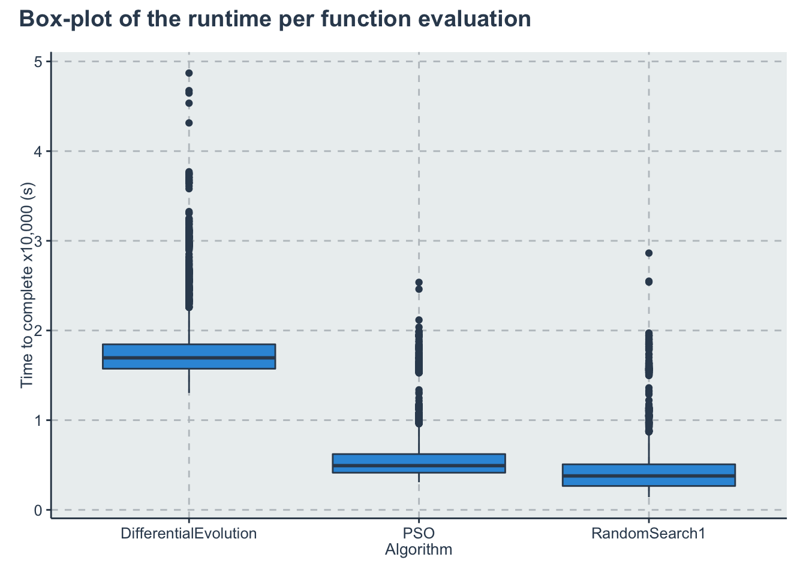
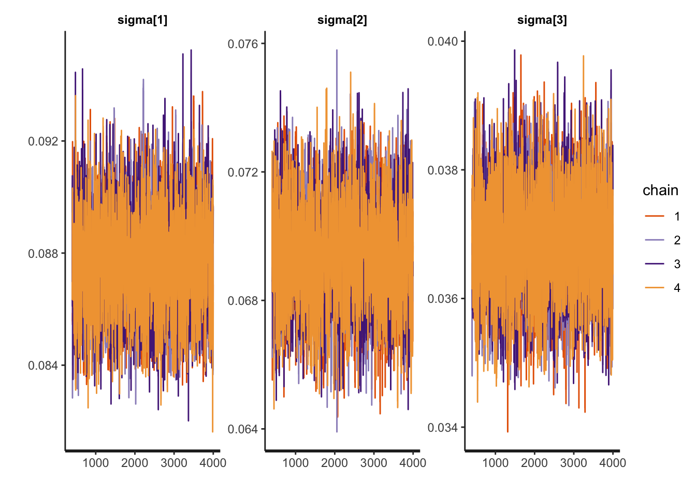

Chapter 6 Multiple-group comparison
We present here the Stan version of the BEST (Bayesian Estimation Supersedes the t Test) from John K. Kruschke. We will consider the following research question
- RQ5: Is there a difference in the time taken per function evaluation between the PSO, the RandomSearch1 and the Differential Evolution algorithms?
6.1 RQ5 Data preparation
We start importing the dataset
dataset <- readr::read_csv('./data/statscomp.csv')Filtering the data that we want and applying some transformations
d <- dataset %>%
dplyr::filter(
OptimizationSuccessful==TRUE &
(Algorithm=="PSO" | Algorithm=="RandomSearch1" | Algorithm=="DifferentialEvolution")) %>%
dplyr::select(Algorithm, CostFunction, TimeToComplete, simNumber, MaxFeval) %>%
dplyr::mutate(y=10000*TimeToComplete/MaxFeval,
CostFunctionID=create_index(CostFunction),
AlgorithmID=create_index(Algorithm)) %>%
dplyr::select(Algorithm, AlgorithmID, CostFunction, CostFunctionID, y,-simNumber, -MaxFeval)
algorithms<-get_index_names_as_array(d$Algorithm)
bm <- get_index_names_as_array(d$CostFunction)The data should look like this:
kable(dplyr::sample_n(d,size=10), "html",booktabs=T, format.args = list(scientific = FALSE), digits = 3) %>%
kable_styling(bootstrap_options = c("striped", "hover", "condensed")) %>%
kableExtra::scroll_box(width = "100%")| Algorithm | AlgorithmID | CostFunction | CostFunctionID | y |
|---|---|---|---|---|
| DifferentialEvolution | 1 | WhitleyN6 | 28 | 2.950 |
| DifferentialEvolution | 1 | ChenBird | 2 | 1.813 |
| PSO | 2 | Trefethen | 25 | 0.541 |
| DifferentialEvolution | 1 | WhitleyN6 | 28 | 2.957 |
| RandomSearch1 | 3 | DiscusN2 | 6 | 0.517 |
| PSO | 2 | RosenbrockRotatedN6 | 14 | 1.747 |
| RandomSearch1 | 3 | Giunta | 8 | 0.379 |
| RandomSearch1 | 3 | QingN2 | 13 | 0.190 |
| RandomSearch1 | 3 | Schwefel2d4N6 | 20 | 0.436 |
| RandomSearch1 | 3 | Damavandi | 5 | 0.360 |
Some initial visualizations in terms of box-plots
p1<-ggplot(d) +
geom_boxplot(aes(x=Algorithm, y=y))+
labs(y="Time to complete x10,000 (s)")
p1 + plot_annotation(title ="Box-plot of the runtime per function evaluation")
lmfit <- lm(y~Algorithm, data=d)
p2<-ggplot()+
geom_qq(aes(sample=lmfit$residuals))+
geom_qq_line(aes(sample=lmfit$residuals))+
labs(x="Standard normal quantiles", y="Sample quantiles")
p2 + plot_annotation(title = "Q-Q plot for normality analysis")Verifying that the log of the runtime still present high tailed distributions
d2<-d
d2$y <- log(d2$y)
lmfit2 <- lm(y~Algorithm, data=d2)
p3<-ggplot()+
geom_qq(aes(sample=lmfit2$residuals))+
geom_qq_line(aes(sample=lmfit2$residuals))+
labs(x="Standard normal quantiles", y="Sample quantiles")
p2 + plot_annotation(title = "Q-Q plot with the log of runtime")
6.2 RQ5 Stan model
The Stan model is specified in the file: './stanmodels/multiplegroups.stan'. Note that at the end of the model we commented the generated quantities. This block generates the predictive posterior y_rep and the log likelihood, log_lik. These values are useful in diagnosing and validating the model but the end file is extremely large (~1Gb for 2000 iterations) and make many of the following calculations slow. If the reader wants to see these values is just to uncomment and run the stan model again.
print_stan_code('./stanmodels/multiplegroups.stan')// Multiple group comparison
// Author: David Issa Mattos
// Date: 23 June 2020
//
//
data {
int <lower=1> N_total; // Sample size
real y[N_total]; // time to complete variable
//To model each algorithm independently
int <lower=1> N_algorithm; // Number of algorithms
int algorithm_id[N_total]; //vector that has the id of each algorithm
//To model the influence of each benchmark
int <lower=1> N_bm;
int bm_id[N_total];
}
parameters {
//Fixed effect
real a_alg[N_algorithm];//the mean effect given by the algorithms
real <lower=0> sigma[N_algorithm];//std for the student t
// //Random effect. The effect of the benchmarks
real a_bm_norm[N_bm];//the mean effect given by the base class type
real<lower=0> s;//std for the random effects
real<lower=0> nu;//std for the random effects
}
model {
real mu[N_total];
real sigma_i[N_total];
sigma ~ exponential(1);
nu ~ exponential(1.0/30.0);
//Fixed effect
a_alg ~ normal(0,1);
// //Random effects
s ~ exponential(1);
a_bm_norm ~ normal(0,1);
for (i in 1:N_total)
{
mu[i] = a_alg[algorithm_id[i]] + a_bm_norm[bm_id[i]]*s;
sigma_i[i] = sigma[algorithm_id[i]];
}
y ~ student_t(nu, mu, sigma_i);
}
//Uncoment this part to get the posterior predictives and the log likelihood
//But note that it takes a lot of space in the final model
// generated quantities{
// vector [N_total] y_rep;
// vector[N_total] log_lik;
// for (i in 1:N_total){
// real mu;
// real sigma_i;
// mu = a_alg[algorithm_id[i]] + a_bm_norm[bm_id[i]]*s;
// sigma_i = sigma[algorithm_id[i]];
// y_rep[i] = student_t_rng(nu,mu,sigma_i);
//
// //Log likelihood
// log_lik[i] = student_t_lpdf(y[i] | nu,mu,sigma_i);
//
// }
// }Let’s compile and start sampling with the Stan function. In the data folder you can find the specific data used to fit the model after all transformations "./data/multiplegroup-data.RDS"
standata <- list(
N_total=nrow(d),
y = d$y,
N_algorithm = length(algorithms),
algorithm_id = d$AlgorithmID,
N_bm = length(bm),
bm_id = d$CostFunctionID
)
saveRDS(standata, file = "./data/multiplegroups-data.RDS")For computation time sake we are not running this chunk every time we compile this document. From now on we will load from the saved Stan fit object. However, when we change our model or the data we can just run this chunk separately. Here we increased the maxtreedepth and the number of iterations so we have a higher effective sample for inference. Both of these do not impact the validity of the chain just the computation efficiency.
standata<-readRDS("./data/multiplegroups-data.RDS")
multiplegroup_fit <- stan(file = './stanmodels/multiplegroups.stan',
data=standata,
chains = 4,
warmup = 400,
iter = 4000,
control = list(max_treedepth = 15))
saveRDS(multiplegroup_fit, file = "./data/multiplegroups-fit.RDS")6.3 RQ5 Diagnosis
a_alg_v <- c("a_alg[1]",
"a_alg[2]",
"a_alg[3]")
sigma_v <- c("sigma[1]",
"sigma[2]",
"sigma[3]")
rstan::traceplot(multiplegroup_fit, pars=a_alg_v)
rstan::traceplot(multiplegroup_fit, pars=sigma_v)
rstan::traceplot(multiplegroup_fit, pars=c('s', 'nu'))Another diagnosis is to look at the Rhat. If Rhat is greater than 1.05 it indicates a divergence in the chains (they did not mix well). The table below shows a summary of the sampling.
kable(summary(multiplegroup_fit)$summary, "html",) %>%
kable_styling(bootstrap_options = c('striped',"hover", "condensed" )) %>%
kableExtra::scroll_box(width = "100%")| mean | se_mean | sd | 2.5% | 25% | 50% | 75% | 97.5% | n_eff | Rhat | |
|---|---|---|---|---|---|---|---|---|---|---|
| a_alg[1] | 1.7811268 | 0.0026230 | 0.0606078 | 1.6619826 | 1.7403893 | 1.7820330 | 1.8215807 | 1.8982458 | 533.8817 | 1.006126 |
| a_alg[2] | 0.5691139 | 0.0026209 | 0.0605588 | 0.4496716 | 0.5283954 | 0.5700587 | 0.6093643 | 0.6855433 | 533.8829 | 1.006094 |
| a_alg[3] | 0.4423529 | 0.0026208 | 0.0605582 | 0.3233317 | 0.4013482 | 0.4432400 | 0.4826083 | 0.5580626 | 533.9264 | 1.006091 |
| sigma[1] | 0.0877444 | 0.0000318 | 0.0017455 | 0.0843878 | 0.0865374 | 0.0877212 | 0.0889341 | 0.0911437 | 3011.1145 | 1.001623 |
| sigma[2] | 0.0694441 | 0.0000277 | 0.0015140 | 0.0664710 | 0.0684330 | 0.0694499 | 0.0704463 | 0.0724822 | 2976.8074 | 1.000836 |
| sigma[3] | 0.0368688 | 0.0000144 | 0.0008039 | 0.0352959 | 0.0363257 | 0.0368479 | 0.0374083 | 0.0384708 | 3121.5824 | 1.000719 |
| a_bm_norm[1] | 0.7169454 | 0.0087107 | 0.2135654 | 0.2988931 | 0.5710651 | 0.7142151 | 0.8674880 | 1.1328629 | 601.1139 | 1.008025 |
| a_bm_norm[2] | -0.1824269 | 0.0085491 | 0.1988784 | -0.5714764 | -0.3176881 | -0.1827604 | -0.0451221 | 0.1940826 | 541.1669 | 1.005750 |
| a_bm_norm[3] | -0.5830931 | 0.0091159 | 0.2163121 | -1.0160424 | -0.7275807 | -0.5801526 | -0.4404438 | -0.1643768 | 563.0722 | 1.003927 |
| a_bm_norm[4] | -0.6091954 | 0.0091666 | 0.2178293 | -1.0467759 | -0.7534750 | -0.6062762 | -0.4656718 | -0.1855039 | 564.6959 | 1.003882 |
| a_bm_norm[5] | -0.2485564 | 0.0086165 | 0.2008707 | -0.6432752 | -0.3856466 | -0.2485221 | -0.1111202 | 0.1316417 | 543.4600 | 1.005561 |
| a_bm_norm[6] | 0.4734111 | 0.0084824 | 0.2024756 | 0.0780666 | 0.3334823 | 0.4720095 | 0.6152515 | 0.8568556 | 569.7825 | 1.007887 |
| a_bm_norm[7] | -0.6423130 | 0.0092312 | 0.2198717 | -1.0846795 | -0.7887968 | -0.6386941 | -0.4972334 | -0.2139691 | 567.3092 | 1.003799 |
| a_bm_norm[8] | -0.1644817 | 0.0085326 | 0.1985217 | -0.5517190 | -0.2996106 | -0.1657384 | -0.0275923 | 0.2129775 | 541.3154 | 1.005963 |
| a_bm_norm[9] | 2.1116300 | 0.0121812 | 0.3393819 | 1.4484849 | 1.8816608 | 2.1092589 | 2.3358436 | 2.7967160 | 776.2394 | 1.005745 |
| a_bm_norm[10] | -0.1812781 | 0.0085416 | 0.1989285 | -0.5714155 | -0.3176169 | -0.1816472 | -0.0444326 | 0.1975518 | 542.3993 | 1.005821 |
| a_bm_norm[11] | 0.9019238 | 0.0089863 | 0.2249558 | 0.4576177 | 0.7501431 | 0.8991386 | 1.0577316 | 1.3417398 | 626.6611 | 1.007809 |
| a_bm_norm[12] | -0.7818005 | 0.0095262 | 0.2292960 | -1.2427092 | -0.9348107 | -0.7782093 | -0.6287008 | -0.3328971 | 579.3611 | 1.003212 |
| a_bm_norm[13] | -0.6775106 | 0.0092827 | 0.2220651 | -1.1227791 | -0.8255683 | -0.6734795 | -0.5296425 | -0.2434466 | 572.2849 | 1.003527 |
| a_bm_norm[14] | 1.7137941 | 0.0109291 | 0.2967903 | 1.1337453 | 1.5123317 | 1.7108835 | 1.9123530 | 2.3102016 | 737.4474 | 1.006425 |
| a_bm_norm[15] | -0.2518458 | 0.0086224 | 0.2009569 | -0.6477380 | -0.3884656 | -0.2520031 | -0.1136934 | 0.1301903 | 543.1896 | 1.005519 |
| a_bm_norm[16] | -0.6890408 | 0.0093176 | 0.2228297 | -1.1395233 | -0.8382348 | -0.6855899 | -0.5409571 | -0.2539657 | 571.9248 | 1.003543 |
| a_bm_norm[17] | -0.2997380 | 0.0086702 | 0.2027220 | -0.6996320 | -0.4386068 | -0.2983614 | -0.1626570 | 0.0871212 | 546.6910 | 1.005343 |
| a_bm_norm[18] | -0.2065718 | 0.0085791 | 0.1997227 | -0.5978602 | -0.3420286 | -0.2057953 | -0.0687583 | 0.1743771 | 541.9588 | 1.005684 |
| a_bm_norm[19] | -0.1781351 | 0.0085411 | 0.1988323 | -0.5689114 | -0.3141829 | -0.1783365 | -0.0407893 | 0.1991033 | 541.9402 | 1.005823 |
| a_bm_norm[20] | 0.0013479 | 0.0084299 | 0.1959243 | -0.3801857 | -0.1321950 | -0.0011718 | 0.1384331 | 0.3748182 | 540.1669 | 1.006703 |
| a_bm_norm[21] | -0.0381568 | 0.0084334 | 0.1961037 | -0.4215247 | -0.1727083 | -0.0400992 | 0.0998043 | 0.3345669 | 540.7160 | 1.006430 |
| a_bm_norm[22] | -0.2591012 | 0.0086473 | 0.2014404 | -0.6537203 | -0.3957154 | -0.2589614 | -0.1220667 | 0.1262415 | 542.6678 | 1.005472 |
| a_bm_norm[23] | -0.7358550 | 0.0094254 | 0.2260798 | -1.1892931 | -0.8858307 | -0.7320868 | -0.5846833 | -0.2939862 | 575.3385 | 1.003330 |
| a_bm_norm[24] | -0.8254234 | 0.0096072 | 0.2324392 | -1.2935835 | -0.9805076 | -0.8213645 | -0.6689679 | -0.3684101 | 585.3639 | 1.003067 |
| a_bm_norm[25] | -0.3366898 | 0.0087284 | 0.2039811 | -0.7369234 | -0.4748569 | -0.3359966 | -0.1992994 | 0.0536531 | 546.1521 | 1.005150 |
| a_bm_norm[26] | 0.3488281 | 0.0084028 | 0.1985740 | -0.0350128 | 0.2120805 | 0.3487199 | 0.4879435 | 0.7238281 | 558.4606 | 1.007803 |
| a_bm_norm[27] | -0.7346498 | 0.0094058 | 0.2258222 | -1.1905483 | -0.8847851 | -0.7302798 | -0.5839647 | -0.2927947 | 576.4249 | 1.003359 |
| a_bm_norm[28] | 3.6998131 | 0.0182556 | 0.5324392 | 2.6893552 | 3.3338793 | 3.6905820 | 4.0513884 | 4.7696181 | 850.6446 | 1.004008 |
| a_bm_norm[29] | -0.4143554 | 0.0088376 | 0.2074474 | -0.8239239 | -0.5542043 | -0.4118008 | -0.2764703 | -0.0164877 | 550.9920 | 1.004714 |
| a_bm_norm[30] | -0.1770084 | 0.0085576 | 0.1989495 | -0.5672901 | -0.3128015 | -0.1772755 | -0.0397254 | 0.2004904 | 540.4818 | 1.005940 |
| s | 0.3072466 | 0.0014798 | 0.0441124 | 0.2352709 | 0.2768578 | 0.3021747 | 0.3322788 | 0.4069552 | 888.6323 | 1.001588 |
| nu | 2.7532026 | 0.0015421 | 0.0802559 | 2.6021136 | 2.6972495 | 2.7520588 | 2.8075206 | 2.9112477 | 2708.6351 | 1.001055 |
| lp__ | 14070.2753067 | 0.1671716 | 5.9172571 | 14057.6082046 | 14066.4863632 | 14070.6208015 | 14074.4422447 | 14080.7870357 | 1252.8982 | 1.000465 |
6.4 RQ5 Results and Plots
First lets get the HPDI of every parameter.
Then we restrict to the algorithms, them to the slopes, then to the parameter s
hpdi <- get_HPDI_from_stanfit(multiplegroup_fit)
hpdi_algorithm <- hpdi %>%
dplyr::filter(str_detect(Parameter, "a_alg\\[")) %>%
dplyr::mutate(Parameter=algorithms) #Changing to the algorithms labels
hpdi_sigma<- hpdi %>%
dplyr::filter(str_detect(Parameter, "sigma\\[")) %>%
dplyr::mutate(Parameter=algorithms) #Changing to the algorithms labels
hpdi_s <- hpdi %>%
dplyr::filter(Parameter=='s')
hpdi_nu <- hpdi %>%
dplyr::filter(Parameter=='nu')
hpdi_nu_s <- hpdi %>%
dplyr::filter(Parameter=='nu' | Parameter=='s')
p_alg<-ggplot(data=hpdi_algorithm, aes(x=Parameter))+
geom_pointrange(aes(
ymin=HPDI.lower,
ymax=HPDI.higher,
y=Mean))+
labs(y="a_alg", x="Algorithm")+
theme(axis.title.x= element_blank())+
coord_flip()
p_alg + plot_annotation(title = 'HPDI interval for the algorithms')p_sigma<-ggplot(data=hpdi_sigma, aes(x=Parameter))+
geom_pointrange(aes(
ymin=HPDI.lower,
ymax=HPDI.higher,
y=Mean))+
labs(y="sigma", x="Algorithm")+
theme(axis.title.x= element_blank())+
coord_flip()
p_sigma + plot_annotation(title = 'HPDI interval for sigma')p_s <- ggplot(data=hpdi_s, aes(x=Parameter))+
geom_pointrange(aes(
ymin=HPDI.lower,
ymax=HPDI.higher,
y=Mean))+
labs(y="s", x="Parameter")+
coord_flip()
p_s + plot_annotation(title = 'HPDI interval std of the benchmarks')p_nu <- ggplot(data=hpdi_nu, aes(x=Parameter))+
geom_pointrange(aes(
ymin=HPDI.lower,
ymax=HPDI.higher,
y=Mean))+
labs(y="nu", x="Parameter")+
coord_flip()
p_nu + plot_annotation(title = 'HPDI interval of the degree of freedom')
p_nu_s <- ggplot(data=hpdi_nu_s, aes(x=Parameter))+
geom_pointrange(aes(
ymin=HPDI.lower,
ymax=HPDI.higher,
y=Mean))+
labs(y="Estimate of s and nu", x="Parameter")+
theme(axis.title.x= element_blank())+
coord_flip()
p_nu_s + plot_annotation(title = 'HPDI interval')Now lets get a posterior distribution of the difference
posterior <- rstan::extract(multiplegroup_fit)
a_alg <- as_tibble(posterior$a_alg)
colnames(a_alg) <- algorithms
sample_a_alg <- dplyr::sample_n(a_alg, size=1000, replace=T) %>%
dplyr::mutate(PSO_Random = PSO-RandomSearch1,
DE_PSO= DifferentialEvolution-PSO,
DE_Random = DifferentialEvolution-RandomSearch1) %>%
dplyr::select(-DifferentialEvolution,-PSO,-RandomSearch1)
#Getting HPDI from a data frame and creating a table instead of plotting...
hpdi_diff<-HDInterval::hdi(sample_a_alg,credMass=0.95)
hpdi_diff<-hpdi_diff %>% as_tibble(rownames = "Metric") %>%
tibble::add_row(Metric="Mean", PSO_Random=mean(sample_a_alg$PSO_Random), DE_PSO=mean(sample_a_alg$DE_PSO), DE_Random=mean(sample_a_alg$DE_Random)) %>%
tidyr::pivot_longer(cols=-Metric, names_to="AlgorithmDifference", values_to='values') %>%
tidyr::pivot_wider(names_from =Metric , values_from=values) %>%
dplyr::mutate(Difference=c('PSO - RandomSearch', 'DiffEvolution - PSO', 'DiffEvolution - RandomSearch')) %>%
dplyr::select(Difference, Lower=lower, Mean, Upper=upper)
kable(hpdi_diff, booktabs=T, format.args = list(scientific = FALSE), digits = 3) %>%
kable_styling(bootstrap_options = c("striped", "hover", "condensed")) %>%
kableExtra::scroll_box(width = "100%")| Difference | Lower | Mean | Upper |
|---|---|---|---|
| PSO - RandomSearch | 0.123 | 0.127 | 0.130 |
| DiffEvolution - PSO | 1.207 | 1.212 | 1.217 |
| DiffEvolution - RandomSearch | 1.334 | 1.339 | 1.343 |
Creating an output table
rename_pars <- c(
paste(rep('a_',length(algorithms)),algorithms, sep = ""),
paste(rep('sigma_',length(algorithms)),algorithms, sep = ""),
's',
'nu')
t<-create_table_model(multiplegroup_fit, pars=c(a_alg_v, sigma_v, 's','nu'),rename_pars)
colnames(t)<-c("Parameter", "Mean", "HPD low", "HPD high")
saveRDS(t,'./statscomp-paper/tables/datafortables/multiplegroupsdifference-par-table.RDS')